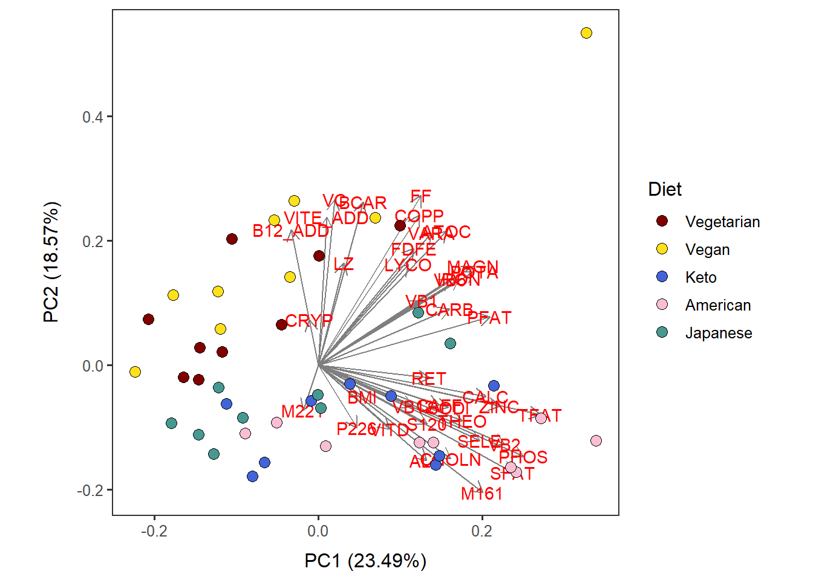
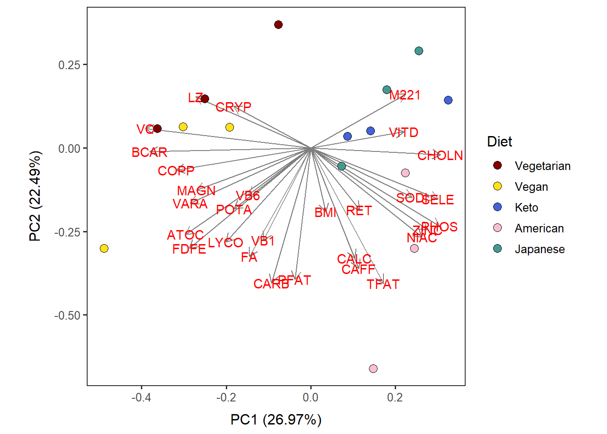
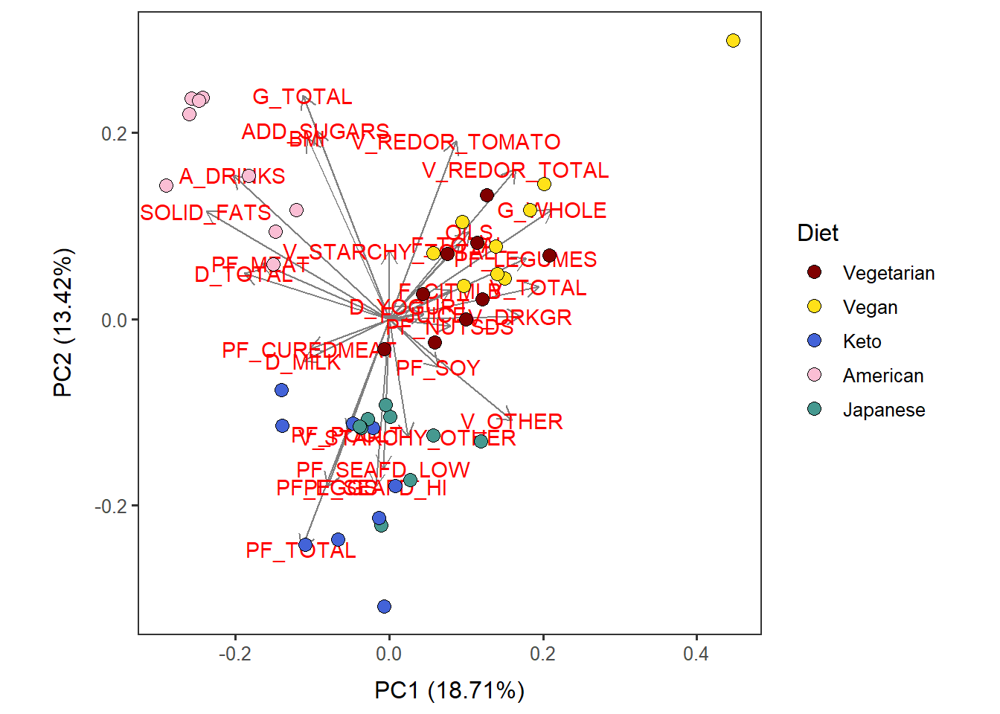
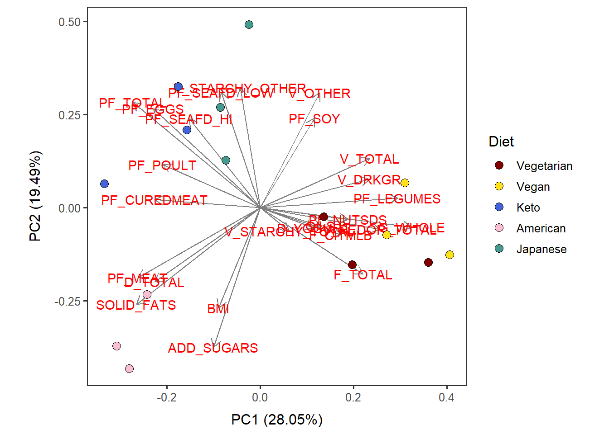

In this section, we are going to perform PCA (Principal Component Analysis) with the totals nutrients as is of the totals dataset, processed for clustering in the previous section.
Before proceeding, ensure to have four directories (folders) named as:
PCA results will be saved in these folders. You can change those directory names, but if you do so, you will need to modify the directory name, “res_dir_xxx_xxxx”, to match your new directory name.
PCA can be done with the following four data types generated above:
Nut_asis),Nut_ave),Cat_asis), andCat_ave).With Nut_asis and Cat_asis, each datapoint will be users on each day. Suited to track potential changes in users’ dietary habits over the course of the trial days.
With Nut_ave and Cat_ave, each datapoint will be users data averaged across days. Suited to analyze the average dietary pattern of users.
Use scale = TRUE for the prcomp function to take care of variables measurements in different units. scale = TRUE transforms data by \((x_{i} - mean(x)) / SD(x)\) so that all the variables will have zero mean and one standard deviation (and variance) and so they are comparable.
Name the path to DietDiveR directory where input files are pulled.
main_wd <- "~/GitHub/DietDiveR"Load necessary pacages.
library(ggplot2)
library(ggfortify)Load the necessary functions.
source("lib/specify_data_dir.R")
source("lib/ggplot2themes.R")
source("lib/PCA.R")Call color palette.
distinct100colors <- readRDS("lib/distinct100colors.rda")You can come back to the main directory by:
setwd(main_wd)Specify the directory where the data is.
SpecifyDataDirectory(directory.name= "eg_data/VVKAJ/")Load the Nut_asis data.
Tot_m_QCed_Nut_asis <- read.table(file="VVKAJ_Tot_m_QCed_Nut_asis_c_rv.txt", sep="\t", header=T)Name your input data.
pca_input <- Tot_m_QCed_Nut_asisEnsure your input file has the correct number of rows and columns.
dim(pca_input)## [1] 45 39Scale the data and perform PCA.
scaled_pca <- prcomp(x=pca_input, scale=TRUE) Specify the directory (folder) to save the results.
res_dir_nut_asis = "PCA_Nut_asis"Specify the prefix of filenames to be saved.
res_prefix_nut_asis = "VVKAJ_Nut_asis"Save PCA output files in a specified folder (out.dir) and a prefix (out.prefix).
OutputPCA(pca.data=pca_input, pca.result=scaled_pca,
out.dir= res_dir_nut_asis, out.prefix= res_prefix_nut_asis )This code will generate several output files all at once in the res_dir:
| Output file postfix | File content |
|---|---|
| _biplotdots.pdf | PCA biplot with the datapoints as dots and with the variables shown as arrows |
| _biplotlabeled.pdf | PCA biplot with the datapoints labed with numbers and with the variables shown as arrows |
| _biplotlabeledwoarrows.pdf | The datapoints labed with numbers; variables are hidden |
| _directions.pdf | Variables shown as arrows only; the datapoints are hidden |
| _loadings_PC1.pdf | Loadings of PC1 shown as a bar chart. |
| _loadings_PC2.pdf | Loadings of PC2 shown as a bar chart. |
| _PC_loadings.txt | Text file with loadings of each PC for the variables. |
| _PC_var_explained.txt | Amount of variation explained by each PC |
| _PCs.txt | The input file (totals/items) and the PCA results combined |
| _scree.pdf | PCA scree plot, showing the amount of variance explained by each PC. |
Combine the input (Nut before processing) with all the variables and the PC results.
SaveInputAndPCs(input="VVKAJ_Tot_m_QCed_Nut_asis_c.txt", pca.results = scaled_pca,
out.dir= res_dir_nut_asis, out.prefix= res_prefix_nut_asis)[Note] Even though the input file has both nutrients (Nut) and food categories (Cat) data, PCA was done with only either Nut or Cat, not both.
Load the complete Nutrients data. (before filtering variables)
Nut_asis_c <- read.table("VVKAJ_Tot_m_QCed_Nut_asis_c.txt", sep="\t", header=T)Change Diet to a factor so that factor levels will be displayed in order.
Nut_asis_c$Diet <- factor(Nut_asis_c$Diet,
levels= c("Vegetarian", "Vegan", "Keto", "American", "Japanese"))Use the autoplot function. Specify which PC in the x and y arguments.
The ‘data’ argument needs the original input for PCA, not after selecting specific variables.
Nut_asis_PC12_diet <-
autoplot(scaled_pca, x=1, y=2,
loadings=T, loadings.label=T, loadings.colour = 'grey50', # loadings.label=T if want to see it
data = Nut_asis_c,
size= 3 ) +
geom_point(size = 3, alpha = 1, na.rm = T, shape = 21, aes(fill= Diet)) +
theme_bw(base_size = 12) + theme(aspect.ratio = 1) +
no_grid + space_axes +
scale_fill_manual(values= distinct100colors) Nut_asis_PC12_diet
ggsave("PCA_NUt_asis/VVKAJ_Nut_asis_PC12_diet.pdf",
Nut_asis_PC12_diet, device="pdf", width=7, height=6.5) You can perform this operation for the other three datasets: Nut_ave, Cat_asis, Cat_ave, by changing the input names as necessary.
Load Nut_ave data.
Tot_m_QCed_Nut_ave <- read.table(file="VVKAJ_Tot_mean_m_QCed_Nut_ave_c_rv.txt", sep="\t", header=T)Name your input data.
pca_input <- Tot_m_QCed_Nut_aveEnsure your input file has the correct number of rows and columns.
dim(pca_input)## [1] 15 29Scale the data and perform PCA.
scaled_pca <- prcomp(x=pca_input, scale = TRUE) Specify the directory (folder) to save the results.
res_dir_nut_ave = "PCA_Nut_ave" Specify the prefix of filenames to be saved.
res_prefix_nut_ave = "VVKAJ_Nut_ave"Save PCA output files in a specified folder (out.dir) and a prefix (out.prefix).
Input is your items/Nut input file before any prep for clustering, from which you derived the input for the PCA.
OutputPCA(pca.data=pca_input, pca.result=scaled_pca,
out.dir= res_dir_nut_ave, out.prefix= res_prefix_nut_ave)Combine the input (before processing) with all the variables and the PC results.
In the case of averaged data / user, the input file used here is xxx_ave_c.txt, which has all the variables before filtering out by correlation or zero variance.
SaveInputAndPCs(input="VVKAJ_Tot_mean_m_QCed_Nut_ave_c.txt", pca.results = scaled_pca,
out.dir= res_dir_nut_ave, out.prefix= res_prefix_nut_ave)Load the complete Nut average data. (before filtering variables)
Nut_ave_c <- read.table("VVKAJ_Tot_mean_m_QCed_Nut_ave_c.txt", sep="\t", header=T)Change Diet to a factor so that factor levels will be displayed in order.
Nut_ave_c$Diet <- factor(Nut_ave_c$Diet,
levels= c("Vegetarian", "Vegan", "Keto", "American", "Japanese"))Use the autoplot function. Specify which PC in the x and y arguments.
The ‘data’ argument needs the original input for PCA, not after selecting specific variables.
Nut_ave_PC12_diet <-
autoplot(scaled_pca, x=1, y=2,
loadings=T, loadings.label=T, loadings.colour = 'grey50', # loadings.label=T if want to see it
data = Nut_ave_c,
size= 3 ) +
geom_point(size = 3, alpha = 1, na.rm = T, shape = 21, aes(fill= Diet)) +
theme_bw(base_size = 12) + theme(aspect.ratio = 1) +
no_grid + space_axes +
scale_fill_manual( values= distinct100colors) Nut_ave_PC12_diet
ggsave("PCA_Nut_ave/VVKAJ_Nut_ave_PC12_diet.pdf",
Nut_ave_PC12_diet, device="pdf", width=7, height=6.5) Load Cat_asis data.
Tot_m_QCed_Cat_asis <- read.table(file="VVKAJ_Tot_m_QCed_Cat_asis_c_rv.txt", sep="\t", header=T)Name your input data.
pca_input <- Tot_m_QCed_Cat_asisEnsure your input file has the correct number of rows and columns.
dim(pca_input)## [1] 45 30Scale the data and perform PCA.
scaled_pca <- prcomp(x=pca_input, scale=TRUE) Specify the directory (folder) to save the results.
res_dir_cat_asis = "PCA_Cat_asis" Specify the prefix of filenames to be saved.
res_prefix_cat_asis = "VVKAJ_Cat_asis"Save PCA output files in a specified folder (out.dir) and a prefix (out.prefix).
OutputPCA(pca.data=pca_input, pca.result=scaled_pca,
out.dir= res_dir_cat_asis, out.prefix= res_prefix_cat_asis )Combine the input (Cat before processing) with all the variables and the PC results.
SaveInputAndPCs(input="VVKAJ_Tot_m_QCed_Cat_asis_c.txt", pca.results = scaled_pca,
out.dir= res_dir_cat_asis, out.prefix= res_prefix_cat_asis)Load the complete Cat data. (before filtering variables)
Cat_asis_c <- read.table("VVKAJ_Tot_m_QCed_Cat_asis_c.txt", sep="\t", header=T)Change Diet to a factor so that factor levels will be displayed in order.
Cat_asis_c$Diet <- factor(Cat_asis_c$Diet,
levels= c("Vegetarian", "Vegan", "Keto", "American", "Japanese"))Use the autoplot function. Specify which PC in the x and y arguments.
The ‘data’ argument needs the original input for PCA, not after selecting specific variables.
Cat_asis_PC12_diet <-
autoplot(scaled_pca, x=1, y=2,
loadings=T, loadings.label=T, loadings.colour = 'grey50', # loadings.label=T if want to see it
data = Cat_asis_c, size= 3 ) +
geom_point(size = 3, alpha = 1, na.rm = T, shape = 21, aes(fill= Diet)) +
theme_bw(base_size = 12) + theme(aspect.ratio = 1) +
no_grid + space_axes +
scale_fill_manual( values= distinct100colors) Cat_asis_PC12_diet
ggsave("PCA_Cat_asis/VVKAJ_Cat_asis_PC12_diet.pdf",
Cat_asis_PC12_diet, device="pdf", width=7, height=6.5) Load Cat_ave data.
Tot_m_QCed_Cat_ave <- read.table(file="VVKAJ_Tot_mean_m_QCed_Cat_ave_c_rv.txt", sep="\t", header=T)Name your input data.
pca_input <- Tot_m_QCed_Cat_aveEnsure your input file has the correct number of rows and columns.
dim(pca_input)## [1] 15 25Scale the data and perform PCA.
scaled_pca <- prcomp(x=pca_input, scale = TRUE) Specify the directory (folder) to save the results.
res_dir_cat_ave = "PCA_Cat_ave" Specify the prefix of filenames to be saved.
res_prefix_cat_ave = "VVKAJ_Cat_ave"Save PCA output files in a specified folder (out.dir) and a prefix (out.prefix).
Input is your items/Nut input file before any prep for clustering, from which you derived the input for the PCA.
OutputPCA(pca.data=pca_input, pca.result=scaled_pca,
out.dir= res_dir_cat_ave, out.prefix= res_prefix_cat_ave)Combine the input (Nut before processing) with all the variables and the PC results.
In the case of averaged Nut data / user, the input file used here is xxx_ave_c.txt, which has all the variables before filtering out by correlation or zero variance.
SaveInputAndPCs(input="VVKAJ_Tot_mean_m_QCed_Cat_ave_c.txt", pca.results= scaled_pca,
out.dir= res_dir_cat_ave, out.prefix= res_prefix_cat_ave) Load the complete Cat average data. (before filtering variables)
Cat_ave_c <- read.table("VVKAJ_Tot_mean_m_QCed_Cat_ave_c.txt", sep="\t", header=T)Change Diet to a factor so that factor levels will be displayed in order.
Cat_ave_c$Diet <- factor(Cat_ave_c$Diet,
levels= c("Vegetarian", "Vegan", "Keto", "American", "Japanese"))Use the autoplot function. Specify which PC in the x and y arguments.
The data argument needs the original input for PCA, not after selecting specific variables.
Cat_ave_PC12_diet <-
autoplot(scaled_pca, x=1, y=2,
loadings=T, loadings.label=T, loadings.colour = 'grey50', # loadings.label=T if want to see it
data = Cat_ave_c,
size= 3 ) +
geom_point(size = 3, alpha = 1, na.rm = T, shape = 21, aes(fill= Diet)) +
theme_bw(base_size = 12) + theme(aspect.ratio = 1) +
no_grid + space_axes +
scale_fill_manual( values= distinct100colors) Cat_ave_PC12_diet
ggsave("PCA_Cat_ave/VVKAJ_Cat_ave_PC12_diet.pdf",
Cat_ave_PC12_diet, device="pdf", width=7, height=6.5) [NOTE] The PCA_ASA24.R script has code to create and make adjustments to each plot/file, if desired.
Come back to the main directory before you start running another script.
setwd(main_wd)